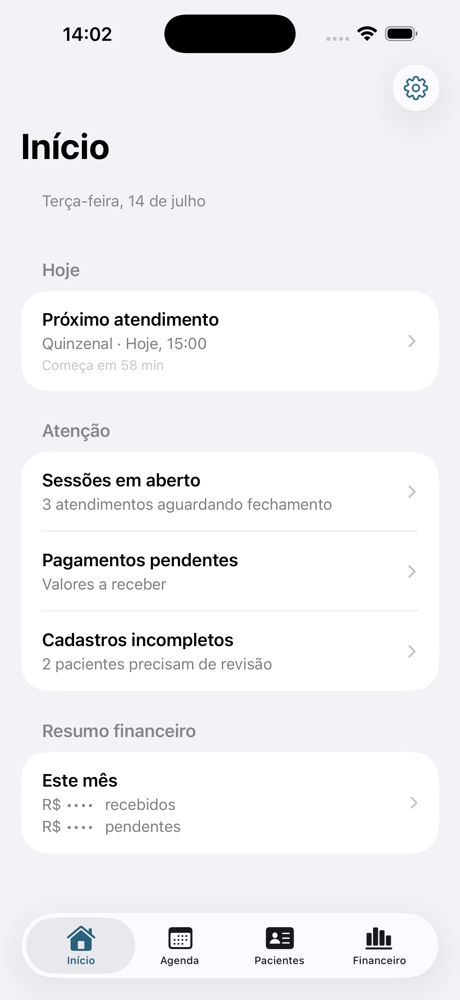
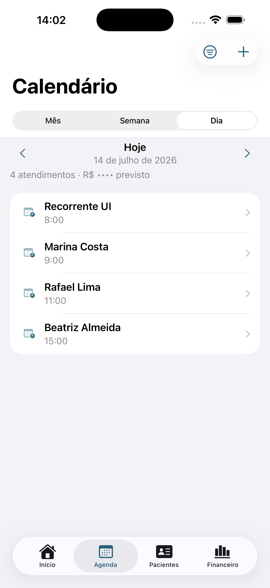
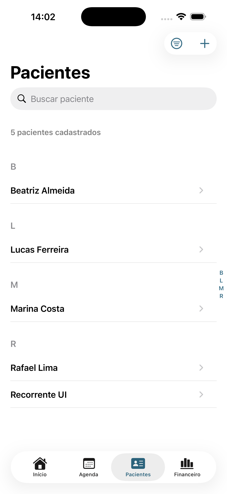
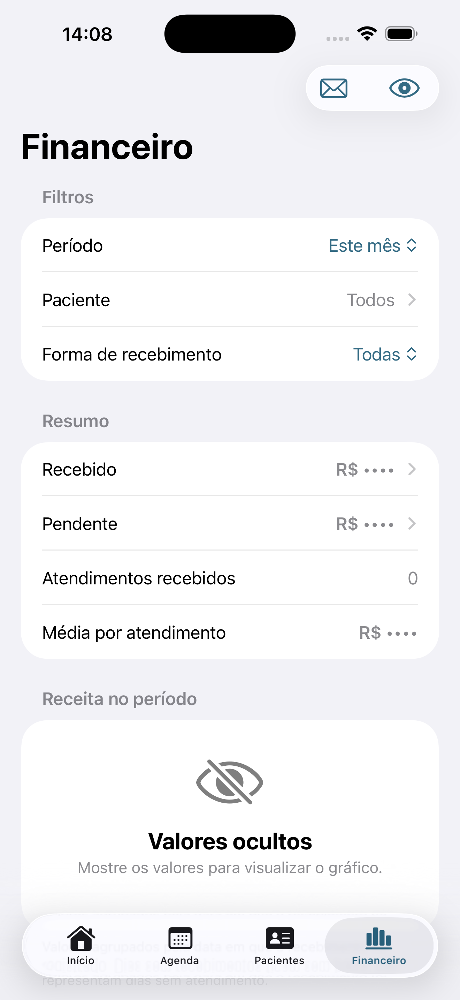
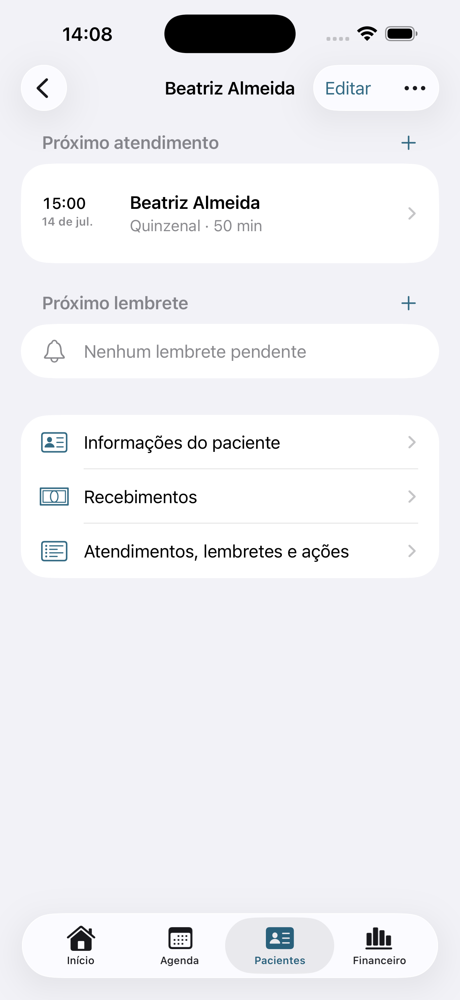
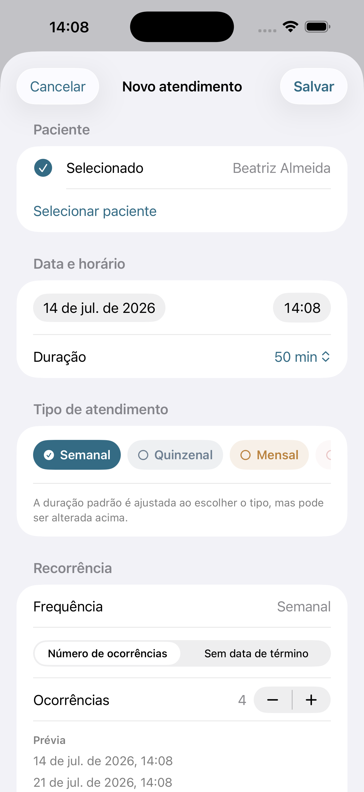
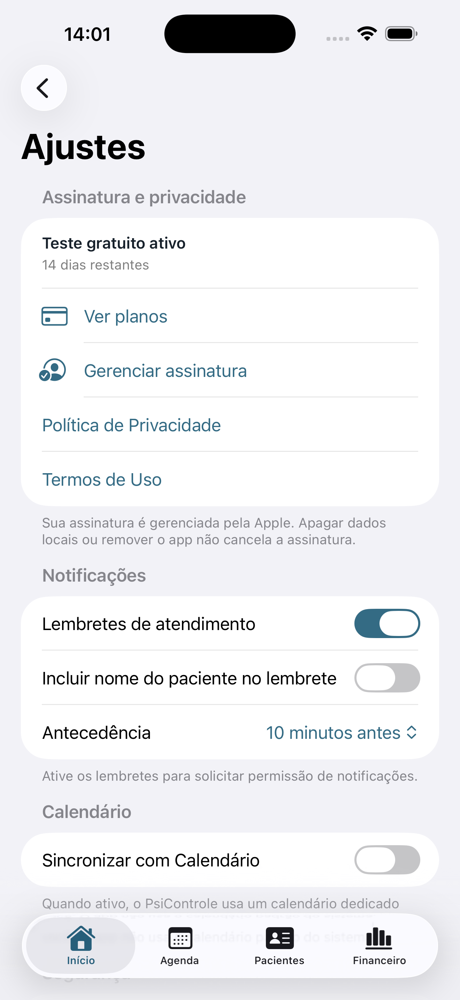

Atendimentos organizados por dia.
Veja os atendimentos de hoje, próximos compromissos, recorrências e lembretes com uma visão clara da semana clínica.
App nativo para iOS
O PsiControle reúne pacientes, agenda, atendimentos, lembretes e finanças em uma experiência simples para iPhone — com privacidade e dados armazenados localmente.
Sem dashboard web. Sem conta externa. Com Calendário, CSV, Siri e Atalhos opcionais.

Rotina clínica
Mantenha agenda, contexto do paciente, pendências e finanças sempre por perto — sem depender de planilhas, anotações soltas ou ferramentas desconectadas.
Veja os atendimentos de hoje, próximos compromissos, recorrências e lembretes com uma visão clara da semana clínica.
Mantenha contatos, documentos, endereço, notas, histórico e pendências conectados ao cadastro de cada paciente.
Filtre recebimentos, acompanhe valores pendentes e o resumo do período, com opção de ocultar informações financeiras.
Consulte agenda e pacientes, crie ou conclua atendimentos e registre recebimentos usando Siri ou o app Atalhos.
Agenda
Planeje o dia, acompanhe rotinas semanais, quinzenais ou mensais e mantenha lembretes alinhados ao Calendário do iOS.

Pacientes
Busque, filtre e revise cadastros com as informações mais importantes para sua rotina.

Financeiro
Use filtros por período, paciente e forma de recebimento para acompanhar a prática sem transformar o app em um sistema contábil.

Privacidade e segurança
Os dados principais ficam no iPhone. Integrações com Calendário, notificações, Siri, Atalhos, Spotlight e exportação são opcionais e configuradas pelo usuário.
Telas
Conheça as principais áreas do app: início, agenda, pacientes, detalhes, novo atendimento, financeiro e ajustes.



PsiControle
Comece com um app simples, criado para psicólogos que querem clareza, privacidade e menos atrito operacional.
Baixar na App Store